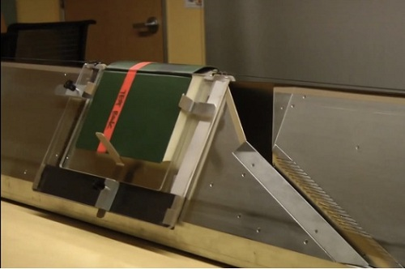

開源書籍掃瞄器 Linear Book Scanner

◎本文原載 Linux Pilot，原文章連結按此。
不少漫畫或小說迷都會把買回來的書籍掃瞄進電腦，希望將作品最佳的狀態保存下來。但曾經掃瞄書本的朋友都會知道，要得到最佳的質素，掃瞄書本時少不免要花書本徹底拆開。但現在這一切都成為過去了，只要家裡有地方，便可自行架設一套書籍掃瞄器。

Google Books 工程師 Dany Qumsiyeh 與團隊利用一般 PC 用的掃瞄器加上吸塵機，製作出一台能夠自動翻頁的書籍掃描器Linear Book Scanner，其設計亦以開源方式公開。只要打開書籍第一頁然後放 Linear Book Scanner 的鐵板軌道上，藉吸塵機的吸力，書本便會來回在軌道上滑動，到達中間有缺口的部分便會自行翻至下一頁。Linear Book Scanner 可用 90 分鐘，將一本 1,000 頁的書籍自動轉換成電子格式。設計看上似複雜，但其實非常簡單，最重要的部分便是那個在缺口的「翻頁刀」。設備的材料成本僅為 1,500 美元，今後掃瞄書籍時便不需要再破壞書本了。設備的設計圖已經以開源方式公開，任何有興趣的人都可以自行下載設計圖打造自己的書籍掃描器。
教學網址：https://www.youtube.com/watch?feature=player_embedded&v=4JuoOaL11bw。